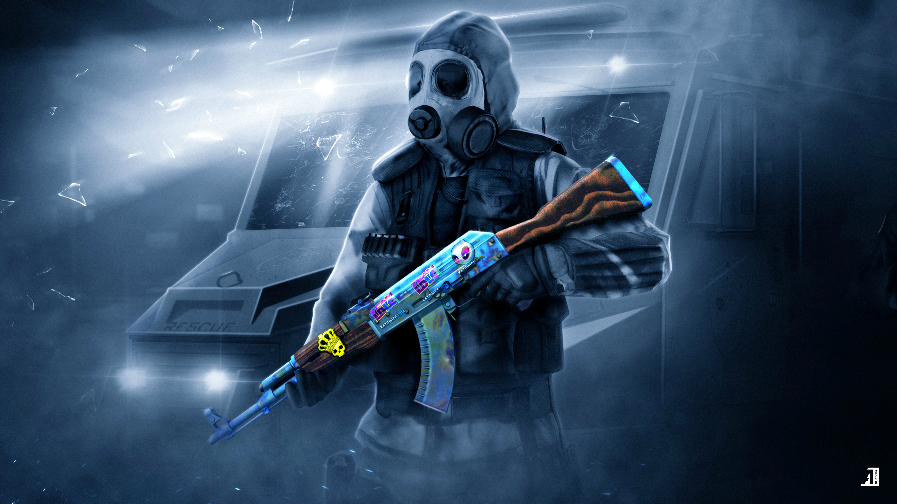
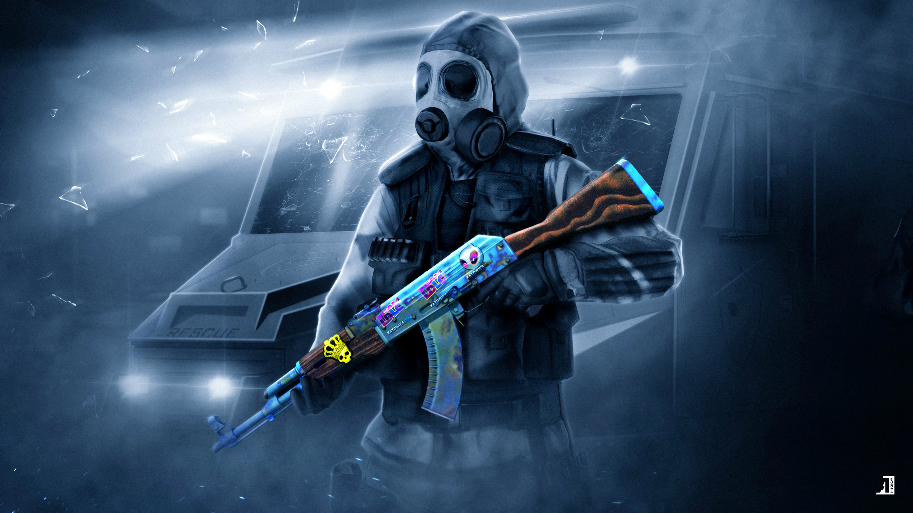

Counter-Strike: Global offensive
 

Counter-Strike: Global Offensive (CS:GO) is a multiplayer first-person shooter video game developed by Hidden Path Entertainment and Valve Corporation. It is the fourth game in the Counter-Strike series and was released for Microsoft Windows, OS X, Xbox 360, and PlayStation 3 in August 2012, with the Linux version released in September 2014. Originally released as a retail product, Global Offensive became free to play in December 2018. The game pits two teams against each other: the Terrorists and the Counter-Terrorists. Both sides are tasked with eliminating the other while also completing separate objectives, the Terrorists, depending on the game mode, must either plant the bomb or defend the hostages, while the Counter-Terrorists must either prevent the bomb from being planted, defuse the bomb, or rescue the hostages. There are eight game modes, all of which have distinct characteristics specific to that mode.